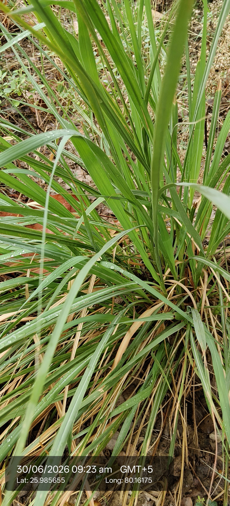

Visual record01 photographs

| Scientific name | Cymbopogon citratus or Cymbopogon flexuosus – both are cultivated in North India. From the leaf look, likely C. citratus |
|---|---|
| Type | Perennial herb, grass family Poaceae |
| Category | Grasses |
Habitat & Growing Conditions
- Native to tropical Asia – India, Sri Lanka, Southeast Asia. Widely cultivated across India, very common in UP including the Kanpur area in your coordinatesThrives in hot, humid tropical to subtropical climate. Loves UP summers at 25-40°C. Sensitive to frost. Dies back in severe winter but regrows from rootsNeeds full sun for strong aroma and oil content – minimum 6 hours daily. Gets weak in shadePrefers well-drained sandy loam to loamy soil. Tolerates poor soil but not waterlogging. Grows well even in marginal landPlanted in home gardens, tea gardens, field bunds, and commercial plantations. Odisha, Assam, Kerala, and UP are major producing statesPerennial clump that can be harvested multiple times a year. Rainy season gives best growth
Economic Importance
- Culinary: Fresh leaves and lower stem used to flavor tea “lemongrass chai”, soups, curries, and Thai dishes. Strong lemon-like flavor without acidityEssential oil: Leaves steam-distilled for “lemongrass oil” rich in citral. Used in perfumes, soaps, cosmetics, mosquito repellents, and aromatherapy. India is a major exporter
Medicinal Importance
- In Ayurveda and folk medicine, tea made from leaves used for fever, cold, cough, digestive issues, and as mild sedative. Oil has antibacterial and antifungal properties. Note: Consult a healthcare professional before any medicinal useAgriculture: Planted on field boundaries and slopes to prevent soil erosion. Dense roots hold soil. Repels some insects from cropsCommercial crop: Low input, high value crop for small farmers. Harvest every 3-4 months. Leaves sold fresh in local markets or to distilleriesHousehold: Dried leaves used as potpourri. Oil used in floor cleaners and air fresheners for lemon scent